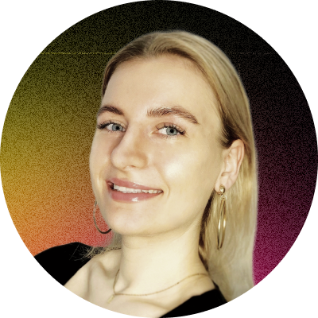

Eliza Gadawska

Summary
Fueled by a passion for digital creativity, I'm enthusiastic about web development, e-commerce, and internet marketing, thriving on crafting intuitive UX/UI designs 🎨, managing projects 🚀, and optimizing user experiences to boost conversions 📈!
Education
- Bachelor of Media Logistics, Management and media technologies - University of Warsaw (2017-2020)
Work Experience
- Freelancer
2024 - Present
- Design graphic layouts for screens, ensuring aesthetics and functionality
- Implement responsive web design (RWD) techniques for optimal performance across various devices
- Prepare content proposals for websites, incorporating best practices for readability and communication
- Create graphics for social media, logos, posters, and banners
- Marketing Specialist
2023 - 2024
- Optimized content according to SEO guidelines and the company's marketing strategy
- Prepared reports on SEO campaign results
- Analyzed keywords and competition to optimize content and discover new opportunities
- Managed website projects, coordinating the work of graphic designers and developers
- Implemented changes and optimizations on websites based on identified errors and project needs
- Communicated between graphic designers, developers, and clients to ensure project consistency
- Managed CMS systems (e.g., WordPress, Drupal)
- Analyzed data from various sources (e.g., Google Analytics)
- Conducted audits of websites
- Implemented changes and optimizations on websites
- UX/UI Designer
2022 - 2023
- Designed interfaces using tools such as Figma and Sketch
- Actively participated in client meetings, presenting project progress and obtaining feedback to tailor solutions to client needs
- Participated in brainstorming sessions with the design team, generating creative ideas and solutions for design challenges
- Communicated with clients at various project stages in both Polish and English
- Developed graphics and videos for social media platforms
- Created UX/UI-related content for social media, such as tips on interface design
Skills
- Interface design
- Competitor analysis
- Prototyping
- Teamwork
- Adaptability
- Analytical thinking
Tools
- Figma
- Canva
- Sketch
- Bitrix
- Wordpress
- Senuto
- GA / GTM /GSC
- Symu / Zeplin
Languages
- Polish - Native
- English - C1
- German - A2
Others